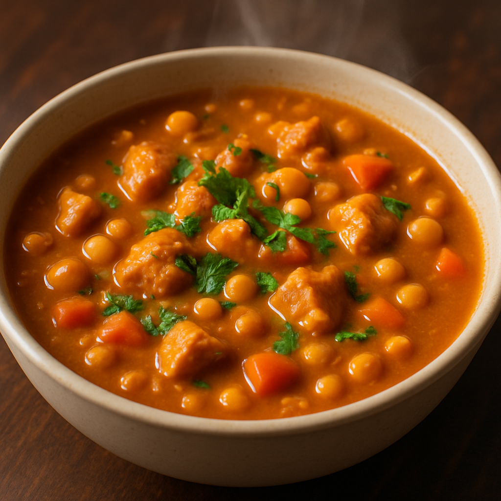

Peanut Stew
Home

Description
A warm, fiber-packed, peanut stew to warm the soul during the cold winter months.
Original recipe © Elizabeth Bey. Photo AI generated.
Ingredients
- 1 Tbsp olive oil
- 1 onion, diced
- 1 bell pepper, diced
- 2 cloves garlic, minced
- 1 cup mushrooms, sliced
- 1 medium sweet potato
- 1 can (15 oz) diced tomatoes
- 1 can (15 oz) chickpeas
- 4 cups veggie broth
- 1/3 cup natural peanut butter
- 2 tsp chili powder + smoked paprika
- salt & pepper to taste
Steps
- Heat oil in a large pot. Saute onion, bell pepper and garlic until softened.
- Add mushrooms and sweet potato. Cook for 5 minutes.
- Stir in diced tomatoes, chickpeas, broth and spices. Bring to a boil, then simmer ~20 minutes until sweet potato is soft.
- Stir in the peanut butter. Mix until smooth.
- Adjust seasoning, then serve hot.